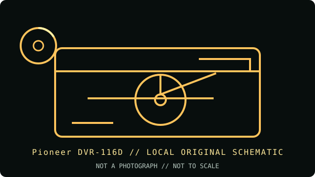

[ INDIVIDUAL COMPONENT // OPTICAL DRIVES ]
Pioneer DVR-116D
Pioneer DVR-116D is the D-suffix model and must not be conflated with DVR-116 or other neighboring products. It records DVD±R and dual-layer media, but does not write DVD-RAM.

IDENTIFICATION: Pioneer DVR-116D · Internal 20× DVD±RW dual-layer writer, PATA generation. Match the full model and revision marking to the cited archive before applying variant-specific specifications.
Model-specific specifications
| Catalog subcategory | DVD writers |
|---|---|
| Exact product identifier | Pioneer DVR-116D |
| Generation / product type | Internal 20× DVD±RW dual-layer writer, PATA generation |
| DVD/CD media support | Writes DVD±R, DVD+R DL, DVD-R DL, DVD±RW, CD-R and CD-RW; reads DVD-ROM, recordable DVD media and common CD formats. The DVR-116D does not record DVD-RAM. |
| Maximum read/write speeds | Write: DVD±R up to 20×; DVD±R DL up to 12×; DVD+RW up to 8×; DVD-RW up to 6×; CD-R up to 40×; CD-RW up to 32×. Read: DVD-ROM up to 16×; CD-ROM up to 40×. |
| Interface and mechanics | Internal 5.25-inch ATA/ATAPI (PATA/IDE), with rear jumper selection. Do not confuse with the SATA DVR-216D or other revisions. |
| Host compatibility | Requires a PATA/ATAPI-enabled PC motherboard or compatible controller, internal 5.25-inch bay and suitable power. The operating manual covers legacy PC installation; burning application, BIOS and media support must match the host. |
| Variant and use notes | Check the complete DVR-116D suffix and firmware. The D model is not the DVD-RAM-writing DVR-116 variant; use supported DVD±R/RW/DL media and set the ATA device jumper for its channel. |
Compatibility and preservation
Advertised maximum rates are media- and firmware-dependent; they are not a guarantee for aged, damaged or unsupported discs. For archival work, retain the full drive model, firmware, media identifier, write strategy and software version with the image or master.
- Confirm the complete label and PATA jumper position before installing; do not infer capabilities from a related suffix or OEM rebrand.
- Use supported blank media and a compatible recorder application, then verify the completed disc by readback and checksum.
- Handle optical media by its edge or hub, store it in a cool, dry location, and preserve an unmodified original when possible.
Manufacturer and archive sources
- Pioneer DVR-116D specifications — ManualsLib archiveModel-specific media/rate table and interface data from the archived manual.
- Pioneer DVR-116D operating manual — Internet ArchiveArchived Pioneer operating manual for model identification and installation.
These references document the named model/family; they do not certify a particular used drive, firmware revision or blank-media batch. Confirm exact suffix and region/OEM variant on the hardware label.